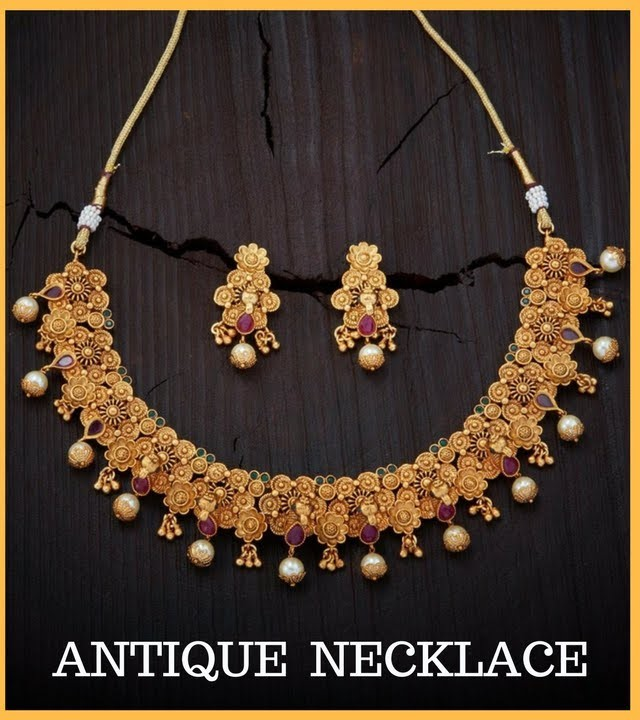
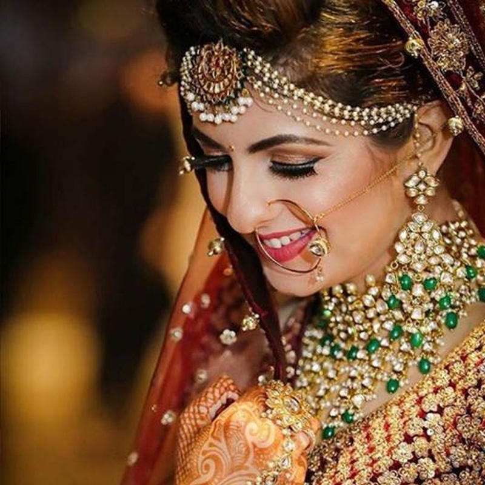
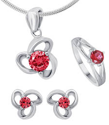

Antique Jewellery is that which makes a statement of the old vintage designs, that is trendy on its own.
The gold plated antique jewellery designs go back in the day, inculcating traditional and rustic feel it.
Jewelry items that are older than 100 years and have witnessed the human evolution over these years constitute
antique jewelry. The phrase “antique jewelry” is generally used to refer to previously owned jewels as well as
the jewelry items crafted using earlier styles that were customarily associated with the era of yore, but it
does not necessarily mean pre-worn or handed down.Antique jewels are becoming highly wanted in the modern world
and high quality gems used as well as their one of a kind rusty look. Antique Indian jewelry can be well identified
by its distinctive design. Indian bridal jewelry grabs everyone’s attention with the visual appeal of its intricate designs.
However; the actual beauty of the jewelry pieces lies much deeper and is considered a blend of spiritual
and cultural essences for the most auspicious and beautiful occasion of a woman’s life. .Beautiful piece
of jewelry has made its entry again into the Indian jewelry box with ladies’
increased love to flaunt a unique traditional style on their wedding. It is used for filling
up the center parting of a woman’s hair which women in India generally keep for putting
vermillion after marriage. It is one of the important signs of a woman who is married in Hindu religion.Silver jewelry studded with gold, precious and semi-precious stones is quite popular, particularly in southern
parts of India. The USP of these ornaments is that they are light weight and of reasonable cost. The versatility
can be observed in silver jewelry, as different states have indigenous influence over its design. The pattern and
precision differ according to region and likes-dislikes of people. Many times, one can determine the marital status
of women as well as her community by the jewelry she wears. Jaypore showcases a stunning range of handmade silver
jewelry for women. Buy handcrafted earrings,
necklaces and other silver jewelry online. Choose from 925 silver jewelry, different designs of Indian silver
jewelry, contemporary silver jewellery, vintage silver jewelry, turquoise and silver jewelry, among others.